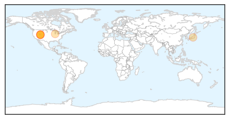

30 Day Trends
Web: 4 alerts, 6 warnings
Twitter: 0 alerts, 0 warnings
Top Articles:
- 0.989
- What is hepatitis C? Everything you need to know
- 0.927
- Why doctors say all baby boomers should be tested
- 0.907
- Health care workers at heightened risk of hepatitis C, Others news, Health News, AsiaOne YourHealth
- 0.841
- Hospital acting cautiously, hoping for no more hepatitis C cases
- 0.826
- Up to 4,800 McKay-Dee Hospital patients may have been exposed to hepatitis C
- 0.778
- Former McKay-Dee Hospital nurse believed to be connected to Hepatitis C exposure
- 0.688
- 4,800 McKay-Dee patients could have been exposed to hepatitis C
Top Tweets:
-
No tweets found for Oct 31, 2015
Web/News Articles

Tweets

Article Locations
Article Confidences